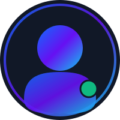

Disponible para nuevos proyectos
Hola, soy Desarrollador
Frontend & DevOps Engineer
Cargando información del perfil...

Portafolio
Proyectos Destacados
Una selección de mis trabajos en desarrollo web, móvil y automatizaciones DevOps.
No hay proyectos en esta categoría por ahora.
Stack Tecnológico
Habilidades & Herramientas
Tecnologías y prácticas que utilizo para dar vida a productos digitales escalables.
¿Tienes un proyecto en mente?
Estoy disponible para oportunidades laborales, consultorías o proyectos colaborativos. ¡Conversemos!
contacto@ejemplo.com